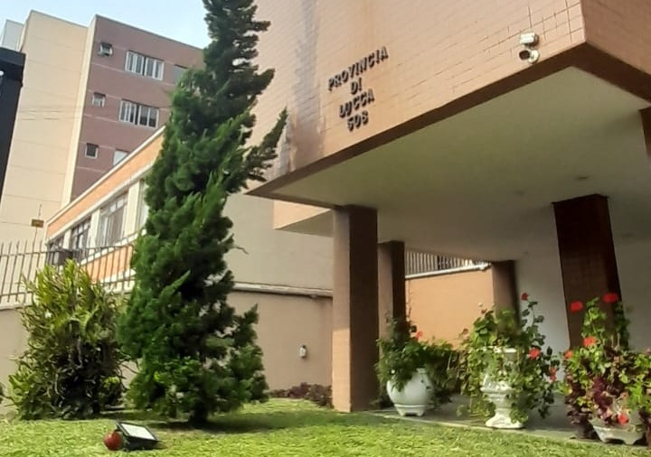

Concentramos as informações do seu condomínio num portal único, facilitando o acesso aos assuntos de seu interesse.
Acesse o ambiente do condômino, confira os avisos, abra chamados e entre em contato com a administração através das opções abaixo.
Administradora atual: F&F Administradora de Condomínios.